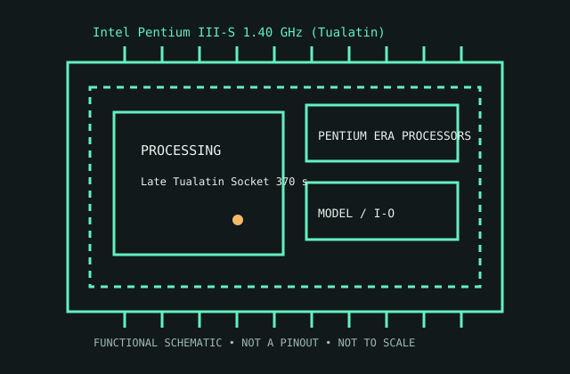

[ PENTIUM ERA PROCESSORS // IDENTIFIED CPU ]
Intel Pentium III-S 1.40 GHz (Tualatin)
Late Tualatin Socket 370 server/workstation Pentium III-S, 2001. 1.4 GHz; 133 MHz FSB; 512 KB full-speed on-die L2; 32 KB L1; 0.13 μm; FC-PGA2.

MODEL IDENTIFICATION: Intel Pentium III-S 1.40 GHz (Tualatin). Match full model suffix, stepping and package to the physical item and cited documentation.
Recorded specifications
| Cataloged model | Intel Pentium III-S 1.40 GHz (Tualatin) |
|---|---|
| Era / family | Late Tualatin Socket 370 server/workstation Pentium III-S, 2001. |
| Model specifications | 1.4 GHz; 133 MHz FSB; 512 KB full-speed on-die L2; 32 KB L1; 0.13 μm; FC-PGA2. |
| Compatibility | Board/adapter explicitly validates Tualatin-S, BIOS, voltage and bus. |
| Variants / limits | “-S” model has 512 KB L2; standard Pentium III variants differ. |
Compatibility and variants
- Board/adapter explicitly validates Tualatin-S, BIOS, voltage and bus.
- “-S” model has 512 KB L2; standard Pentium III variants differ.
- Check system-vendor CPU support, board revision, firmware minimum, package, memory, cooling and power before installation; similar socket naming does not prove compatibility.
Service and archival notes
Record sSpec, adapter, VRM and BIOS support.
Archive the complete marking/OPN/sSpec, stepping, physical condition, tested host revision, firmware, memory population, cooling, and test conditions. Distinguish published limits from measurements.
Sources & further reading
- Intel ARK model lookup — Intel Pentium III-S 1.40 GHz (Tualatin)Official Intel model specification search for the cataloged product.
- Intel technical archive — Intel Pentium III-S 1.40 GHz (Tualatin) product familyArchived Intel-authored processor data sheets/manuals; match model and revision.
- Intel processor-history reference — Intel Pentium III-S 1.40 GHz (Tualatin)Historical context for Intel processor generations; use the exact data sheet for limits.
- PhilsComputerLab — Pentium III Tualatin 1.4 GHz Review - The best Pentium 3Independent video review; treat as supplementary context, not primary manufacturer documentation.
Use the matching manufacturer data sheet revision and platform vendor’s CPU list for final fit decisions.